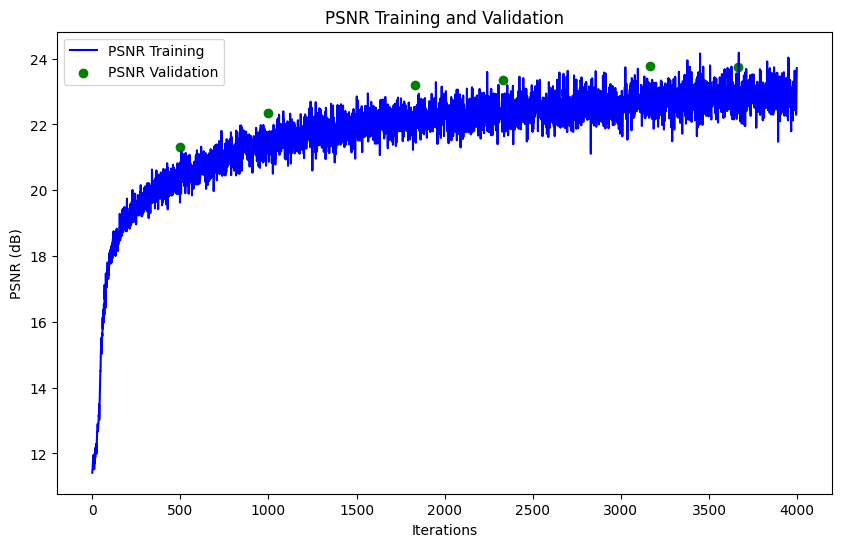

Project Overview
This project explores the implementation of Neural Radiance Fields (NeRF) to represent 2D images and 3D scenes. The project is divided into two parts: fitting a neural field to a 2D image and creating a NeRF for multi-view 3D scenes. Techniques like sinusoidal positional encoding, ray sampling, and volume rendering are used to build and optimize these models.
Part 1: Neural Field for 2D Image
In this part, a neural field is optimized to fit a 2D image. A multilayer perceptron (MLP) is used with sinusoidal positional encoding to learn the mapping from pixel coordinates to RGB values. The training process includes random pixel sampling and minimizing mean squared error loss.
The hyperparameters we used were:
- Number of layers: 4
- Channel size: 256
- Max frequency for the positional encoding: 10
- Learning rate: 0.01
- Batch Size: 10K
- Number of Epochs: 10
Training Process Visualization
Iteration 10

Iteration 100
Iteration 500

Iteration 1000
Visualization of the predicted image across training iterations.
Here is the image of the fox with few iterations, many iterations and the original image.

Original Fox
Fox 10 Iterations
Fox 1000 Iterations
PSNR Curve
Plot showing the PSNR across training iterations.

Input Image 1

Reconstructed Image 1

Reconstructed Image 2
Part 2: Neural Radiance Field for 3D Scenes
This part extends the neural field to 3D scenes using multi-view images. Rays are sampled from the images, and a volume rendering equation is applied to integrate densities and colors along the rays to generate pixel colors. Below is a diagram of the structure for the network implemented.
Camera and Ray Visualization
Below is the image of how the rays travel from the cameras through the images. The points are added to show how the rays sample points randomly on the rays and they are perturbed which we can see from the fact that the points are not spread out uniformly.

Visualization of sampled rays and camera frustums.
Volume Rendering Results
Progression of the rendered images during training. The image starts out blurry and becomes sharper as the model learns the scene.

Epoch 0 Batch 500
Epoch 0 Batch 1000
Epoch 1 Batch 500
Epoch 1 Batch 1000

Epoch 2 Batch 500
Epoch 2 Batch 1000
Here is the video of the final result of the 3D scene from both low resolution and high resolution. The high resolution had the following hyperparameters:
- Number of positional encoding frequencies (L_x): 10
- Number of directional encoding frequencies (L_r_d): 4
- Hidden layer dimension: 256
- RGB output dimension: 3
- Density output dimension: 1
- Number of hidden layers: 8

Low Resolution

High Resolution
PSNR Curve
As we can see from the plot below, the curve is rapidly increasing in the begninning and slowly converging to a high PSNR value of around 23-24 PSNR. Our final PSNR value was 23.6.
Plot showing the PSNR for validation images during training.
Bells and Whistles
For the B&W Portion, we added a blue background to the video by changing the volume function. The way we did this was by setting a threshold where if the transmittance was below a certain value, we would set the color to blue. This however, causes some aliasing issues as we can see which could have been fixed by implementing a solution where you add a color inverse proporsionally to the transmittance. Below is a video of the final result.

Custom Background Rendering
Acknowledgements
This project is part of CS 180 at UC Berkeley. Starter code and datasets were provided by course staff.